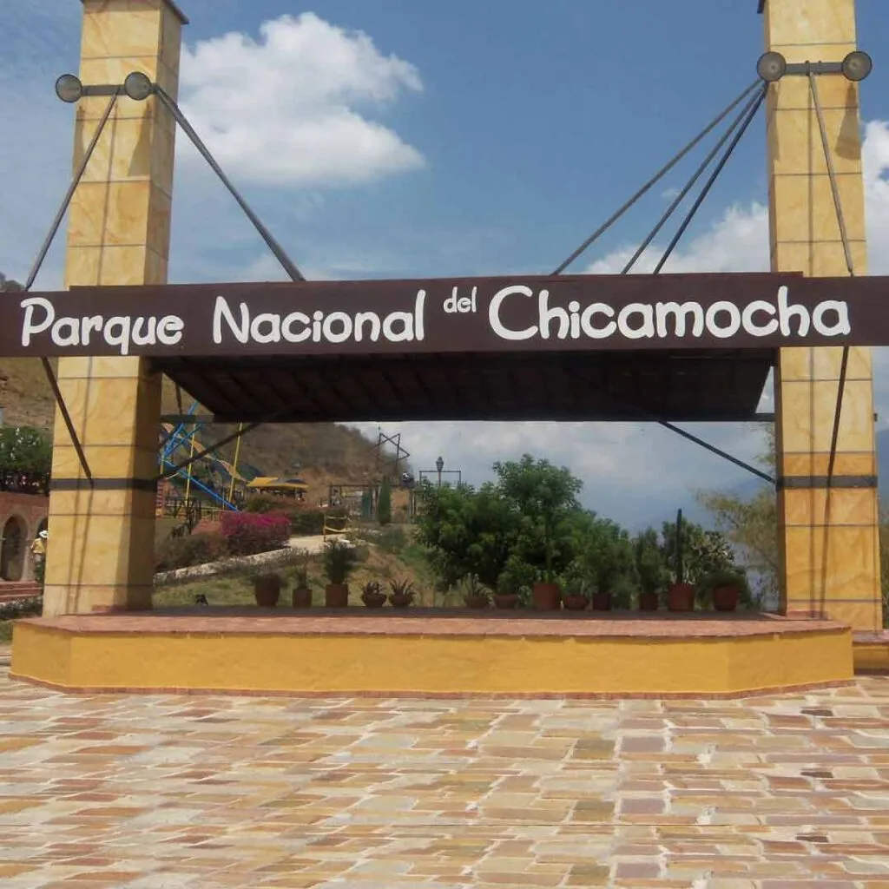

Descubre Santander
Santander es un departamento lleno de historia, cultura y paisajes naturales imponentes. Conocido como la tierra de los valientes, ofrece desde pueblos coloniales hasta deportes extremos.
Bucaramanga, su capital, es llamada la “Ciudad Bonita de Colombia”, mientras que sus alrededores son un paraíso para la aventura y el ecoturismo.
Parque Nacional del Chicamocha
El Parque Nacional del Chicamocha (PANACHI) es uno de los atractivos turísticos más importantes de Santander. Ubicado en el majestuoso Cañón del Chicamocha, ofrece actividades de aventura como parapente, teleférico, deportes extremos y miradores con paisajes impresionantes que muestran la grandeza de la naturaleza colombiana.
Hormiga Culona
La Hormiga Culona es un símbolo de la cultura santandereana. Además de ser un alimento típico de la región, en Bucaramanga se ha levantado una escultura gigante en su honor, representando la tradición, la gastronomía y el orgullo de sus habitantes.
¡Contáctanos!